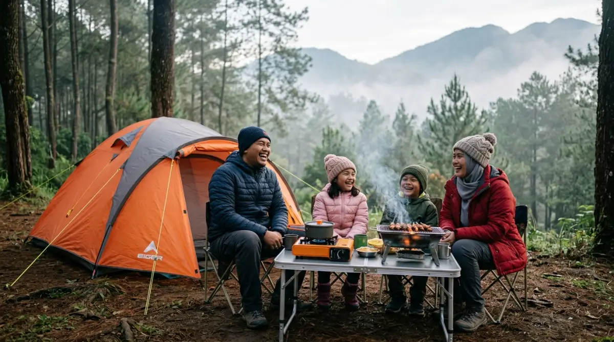
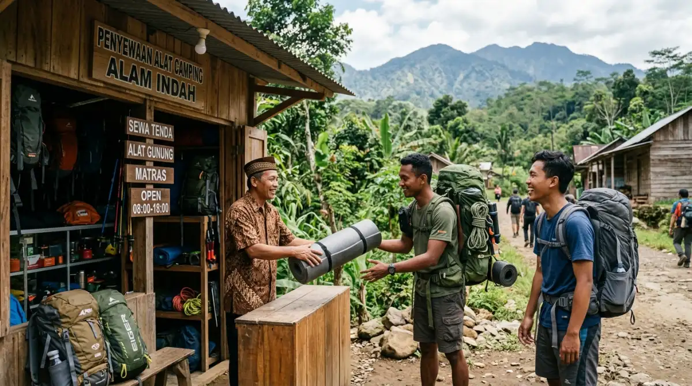

Nikmati liburan camping tanpa ribet dengan paket peralatan lengkap.- Keuntungan Menggunakan Paket Peralatan Camping
- Memangkas Keribetan Persiapan
- Jaminan Keselamatan Lewat Spesifikasi Alat yang Tepat
- Menyelamatkan Dompet dari Investasi yang Tidak Perlu
- Fasilitas Ekstra yang Mengubah Kemah Menjadi "Glamping"
- Solusi Ramah Lingkungan dan Dukungan untuk Ekonomi Lokal
- Penutup
- FAQ
Pernahkah kamu merasa jatah cuti tahunan berlalu begitu saja tanpa ada liburan yang benar-benar berkesan? Bayangkan skenario ini: kamu sudah merencanakan pelarian dari penatnya tumpukan tugas kantor ke sejuknya alam pegunungan. Tapi alih-alih bersantai menikmati kabut pagi yang menenangkan, waktumu justru habis tersita untuk mengepak tenda, memastikan kompor portabel menyala, dan kebingungan mencari pinjaman matras untuk teman-teman.
Sangat disayangkan, bukan? Momen berharga yang seharusnya jadi tempat melepaskan stres justru berubah layaknya proyek lembur baru yang melelahkan. Padahal, menikmati alam bebas sama sekali tidak harus selalu diwarnai dengan keribetan yang menguras emosi. Jangan biarkan sisa waktu luangmu terbuang percuma karena gengsi persiapan yang berlebihan. Dengan sebuah langkah praktis, kamu bisa langsung duduk manis di depan api unggun tanpa beban. Mari kita bedah bagaimana sebuah keputusan sederhana ini bisa menyelamatkan akhir pekan berhargamu dari penyesalan.
Keuntungan Menggunakan Paket Peralatan Camping untuk Liburan Praktis di Pegunungan
Mengambil jeda dari rutinitas kerja harian adalah sebuah kebutuhan, bukan lagi kemewahan. Saat alarm pagi digantikan oleh suara burung dan layar monitor berganti menjadi rimbunnya hutan pinus, di situlah letak penyegaran mental yang sesungguhnya. Kawasan pegunungan seperti Batu dan Malang selalu menjadi primadona bagi warga kota yang haus akan udara segar. Namun, niat suci untuk "healing" ini seringkali layu sebelum berkembang ketika dihadapkan pada realita persiapan logistik berkemah.
Menyiapkan perlengkapan outdoor itu rasanya mirip dengan mengurus revisi laporan di hari Jumat sore—menguras tenaga dan memancing emosi. Mulai dari mengecek kelengkapan pasak tenda, memastikan gas kaleng tidak bocor, hingga membongkar gudang demi mencari sleeping bag yang entah di mana rimbanya. Di sinilah paket peralatan camping hadir sebagai jalan pintas paling rasional untuk menyelamatkan kewarasanmu.
Mari kita bahas mengapa menyewa peralatan lengkap jauh lebih menguntungkan dibandingkan harus repot membawa segalanya sendiri dari rumah.
Memangkas Keribetan Persiapan Layaknya Proyek Terima Beres
Di dunia kerja, kita mengenal istilah delegasi tugas. Jika ada hal yang bisa dikerjakan oleh ahlinya dengan lebih efisien, mengapa harus membebani diri sendiri? Konsep ini sangat relevan saat kamu merencanakan liburan ke alam bebas. Menggunakan layanan persewaan yang menyediakan paket lengkap ibarat memberikan proyek kepada vendor tepercaya; kamu tinggal menerima beres.
Saat kamu membawa mobil penuh dengan anggota keluarga atau rombongan outbound teman sekantor, ruang di bagasi pasti sudah penuh sesak dengan tas pakaian dan perbekalan camilan. Jika harus ditambah dengan gulungan tenda, boks alat masak, dan berlembar-lembar matras, perjalanan panjang menuju Batu atau Malang akan terasa sangat sempit dan tidak nyaman.
Dengan menyewa alat yang sudah tersedia di lokasi atau di sekitar area camping ground, kamu memangkas beban fisik dan pikiran secara drastis. Kamu tiba di lokasi dengan energi penuh, siap untuk langsung membangun tenda dengan santai tanpa otot punggung yang kaku.

Paket peralatan camping lengkap, tinggal pakai tanpa ribet persiapan.Jaminan Keselamatan Lewat Spesifikasi Alat yang Tepat
Satu hal yang sering diremehkan oleh wisatawan pemula adalah suhu udara di pegunungan. Hawa sejuk Kota Malang di siang hari bisa berubah menjadi suhu belasan derajat yang menusuk tulang di malam hari, terlebih jika kamu berkemah di area dataran tinggi Batu. Membawa selimut tipis dari kamar kos atau jaket hoodie biasa sama sekali tidak akan menolongmu menghadapi angin malam pegunungan.
Penyedia paket peralatan camping yang profesional sangat memahami kondisi geografis dan cuaca lokal. Mereka tidak akan menyewakan tenda single layer yang tipis dan rawan bocor saat hujan. Sebaliknya, mereka sudah menyiapkan standar keselamatan yang mumpuni.
Kamu akan mendapatkan tenda double layer yang mampu menahan kondensasi dan angin kencang, matras foil untuk menahan hawa dingin dari tanah, serta sleeping bag berbahan dacron tebal yang mengisolasi panas tubuh dengan maksimal. Kepastian kualitas alat ini sangat krusial, karena liburan yang menyenangkan selalu berawal dari rasa aman dan tubuh yang tetap hangat.
Menyelamatkan Dompet dari Investasi yang Tidak Perlu
Mari berhitung secara logis. Untuk membeli sebuah tenda dome berkualitas menengah dengan kapasitas empat orang, kamu perlu merogoh kocek minimal satu hingga dua juta rupiah. Belum lagi harga kompor portabel, nesting (panci kemah), lampu tenda, hingga kursi lipat estetik yang sedang tren itu. Total biayanya bisa membengkak menyamai bonus akhir tahunmu.
Pertanyaannya, seberapa sering kamu akan menggunakan barang-barang tersebut? Bagi pekerja kantoran biasa, kesempatan untuk berkemah mungkin hanya datang dua atau tiga kali dalam setahun. Jika membeli sendiri, peralatan mahal itu hanya akan berdebu di sudut lemari atau memakan ruang di gudang mungilmu.
Menyewa paket lengkap sangat ramah di kantong. Dengan biaya yang jauh lebih terjangkau, kamu sudah bisa menikmati fasilitas premium layaknya pendaki profesional. Uang sisa dari budget alat ini tentu bisa kamu alokasikan untuk hal lain yang tak kalah penting, seperti membeli daging wagyu untuk grilling atau memperpanjang masa inapmu.
Fasilitas Ekstra yang Mengubah Kemah Menjadi "Glamping"
Perkembangan tren liburan saat ini membuat batas antara camping tradisional dan glamping (glamorous camping) semakin tipis. Menginap di alam tidak lagi identik dengan makan mi instan berturut-turut di tengah kegelapan. Banyak penyedia paket saat ini berlomba-lomba menawarkan fasilitas ekstra yang memanjakan pelanggannya.
Selain kebutuhan dasar untuk tidur yang nyaman, sebuah paket biasanya sudah mencakup alat masak yang lengkap. Bahkan, kamu bisa dengan mudah menemukan opsi yang menyertakan alat panggangan BBQ lengkap dengan arang dan penjepitnya.
Bayangkan kamu sedang duduk bersantai bersama rekan kerja atau keluarga di bawah taburan bintang Malang, diselimuti jaket tebal, sambil membakar sosis dan daging berbumbu. Tidak perlu pusing memikirkan panci yang tertinggal atau kompor yang macet, karena semuanya sudah dijamin kelayakannya oleh pihak penyewa. Fokusmu hanyalah menikmati kebersamaan dan merajut cerita.
Solusi Ramah Lingkungan dan Dukungan untuk Ekonomi Lokal
Di balik kepraktisannya, ada nilai tambah lain yang sering luput dari perhatian. Dengan menyewa alat, secara tidak langsung kamu sedang mempraktikkan gaya hidup sirkular yang lebih ramah lingkungan. Berbagi penggunaan barang (sharing economy) berarti mengurangi produksi limbah dan jejak karbon dari industri manufaktur peralatan outdoor.
Selain itu, penyedia sewa alat kemah di daerah wisata seperti Batu dan Malang umumnya dikelola oleh warga lokal atau komunitas pecinta alam setempat. Dengan menggunakan jasa mereka, kamu turut serta menggerakkan roda perekonomian daerah. Mereka juga biasanya sangat ramah dan tidak segan berbagi informasi berharga yang tidak akan kamu temukan di mesin pencari, seperti spot terbaik untuk melihat matahari terbit, arah angin, hingga mata air terdekat.
Penutup
Waktu luang adalah komoditas paling mewah bagi kita yang sehari-harinya berjibaku dengan padatnya jadwal dan kemacetan kota. Saat kesempatan untuk menghirup udara segar pegunungan itu datang, jangan merusaknya dengan beban ekspektasi dan kerumitan logistik. Alam selalu punya cara untuk menyembuhkan kelelahan mental, asalkan kita bersedia datang dengan hati dan pikiran yang tenang.
Memilih untuk menggunakan paket peralatan camping adalah bentuk penghargaan terhadap dirimu sendiri dan orang-orang yang berlibur bersamamu. Jauh di masa depan nanti, yang akan kamu ingat dari perjalanan ini bukanlah seberapa mandiri kamu mendirikan tenda sendiri, melainkan betapa hangatnya tawa keluarga saat memanggang daging bersama di bawah rasi bintang pegunungan Batu.
Jadi, sebelum masa cutimu hangus atau waktu akhir pekan menguap begitu saja, putuskanlah untuk mengambil cara yang lebih mudah. Kemasi pakaian secukupnya, serahkan urusan peralatan pada ahlinya, dan nikmati momen liburanmu tanpa ada rasa sesal sedikit pun.
FAQ